Hong Kong
소호 + 노호 + 포호 홍콩 올드타운센트럴
- Editor. 트래비
- 입력 2017.05.31 13:51
- 댓글 1
홍콩, 특히 올드타운센트럴에 발을 디딘다는 것은 화려한 색채와 다양한 결의 매혹적인 그림 앞에 선 것과 같다. 옛것과 새것, 동양과 서양의 문화, 고급스러움과 소박함이 영민하게 어우러져 다채로운 매력을 발산한다. 유니크함을 무기로 사람들을 유혹하는 아티스트처럼, 본격적으로 수많은 여행자의 마음을 빼앗고 훔친다. 마치 그것만이 ‘도시의 일’이라는 듯.
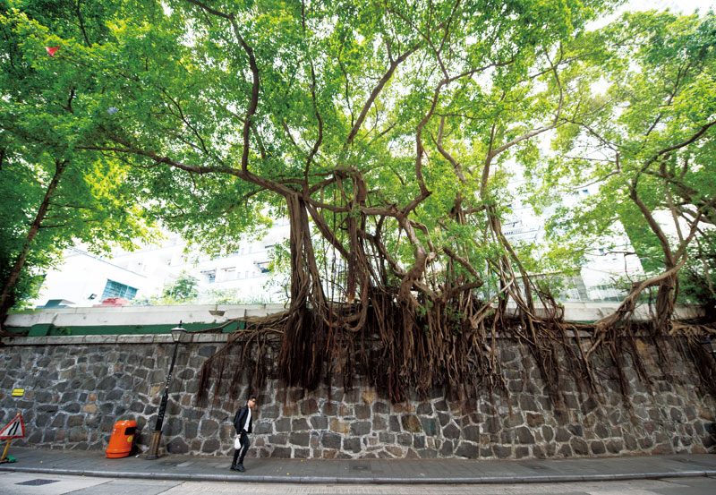
할리우드 로드를 수놓은 아름다운 반얀트리
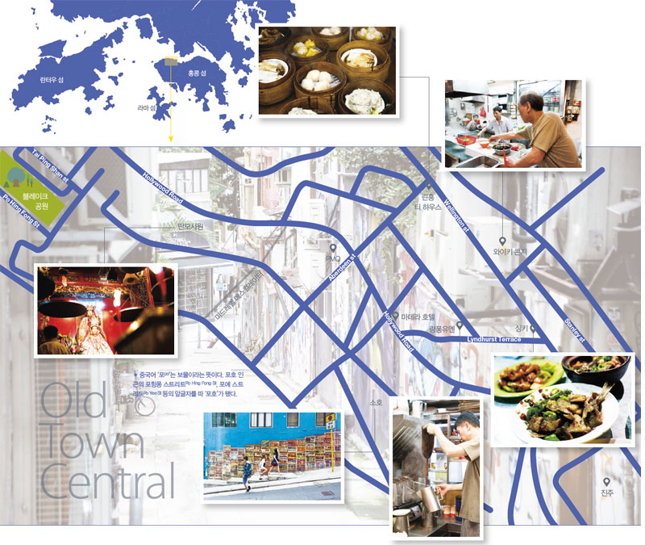
●Old Town Central
너는 어디에, 올드타운센트럴
밋밋하고 한결같은 것은 평온할지언정 재미있을 리 만무하다. 매력이 있으려면 숨겨 둔 얼굴, 모르던 표정들이 순간순간 새어 나와야 할 터. 올드타운센트럴은 우리가 모르던 홍콩의 진가를 꺼내 보이기 시작했다. 소호와 노호는 이미 유명세를 치렀고, 인근 거리의 이름을 딴 포호*가 방점을 찍으며 ‘별들이 소곤대는’ 홍콩의 밤거리를 ‘별들이 합창하는’ 홍콩의 밤거리로 만들 추세다. 정확한 좌표를 찍자면 성완과 센트럴 사이의 비탈길에 위치한 수많은 거리들이 올드타운센트럴이다.
불타는 금요일의 이른 저녁이다. 쑨원이 혁명을 도모했다는 린드허스트 테라스(Lyndhurst Terrace) 인근의 마데라 호텔에 짐을 풀었다. 소호, 노호, 포호를 관통하는 할리우드로드(Hollywood Road)에 위치한 덕에 홍콩에 거주하는 외국인, 현지인, 여행자들이 한껏 차려입고 호텔 주변으로 모여들기 시작했다. 호텔 바로 앞은 홍콩의 명물인 미드레벨 에스컬레이터의 서쪽, 소호다. 짐을 던지다시피 두고 나와 걸었다. 독일어, 스페인어, 영어, 불어, 광둥어, 중국어가 재잘대는 소리들이 화음을 이루어 왱왱 울린다. ‘지금 지구에서 가장 생기 가득한 곳을 꼽으라면 단연 여기다’ 싶었다. 코즈모폴리탄의 밤은 소호를 중심으로 서쪽에 위치한 노호, 포호로 이동할수록 ‘힙’해진다. 열댓 명 들어가면 꽉 찰 정도의 작은 펍이나 레스토랑들은 이미 만석이다. 자리를 잡지 못한 사람들은 맥주를 들고 문 닫은 재래시장 평상 앞이나 비탈에 놓인 계단에 모여 앉아 즐겁다. 모두가 그렇게 술에 취하고, 밤의 활기에 취한다.
* 중국어 ‘포(po)’는 보물이라는 뜻이다. 포호 인근의 포힝퐁 스트리트(Po Hing Fong St), 포에 스트리트(Po Yee St) 등의 앞글자를 따 ‘포호’가 됐다.
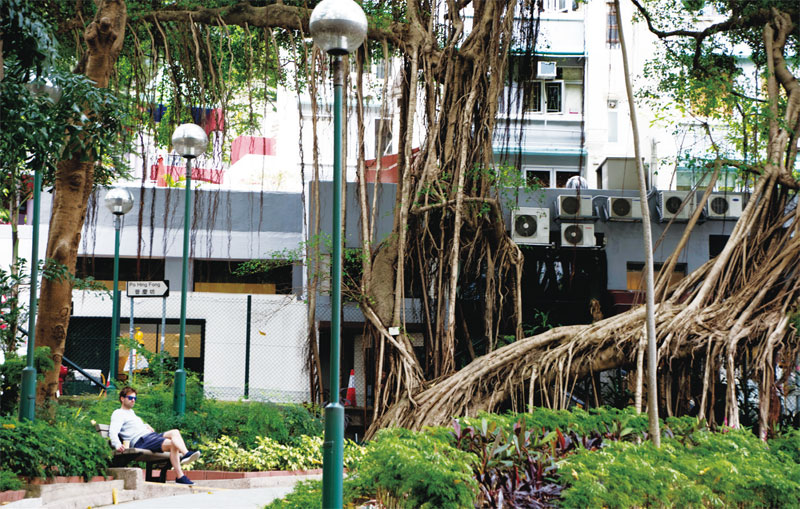
포호의 블레이크 공원은 시민들의 아늑하고 평온한 휴식처다
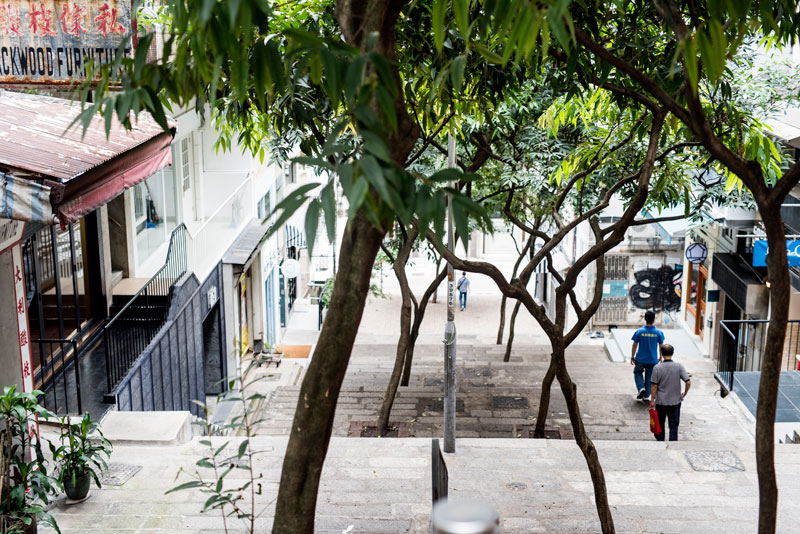
포호 거리를 오래 걸어도 쉽게 지치지 않는 이유, 빌딩 숲 틈틈이 나무그늘을 만날 수 있어서다
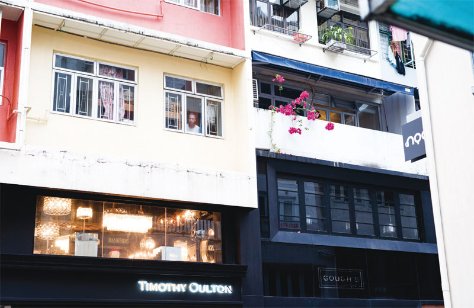
포호 거리에 살고 있는 주민의 얼굴, 보슬비 내리는 창밖을 바라보며 우산을 챙길지 말지 고민하는 중이다.
●대충 보면 1시간, 찬찬히 보면 3박 4일도 부족
현지인들이 인지하는 소호와 포호의 경계는 만모사원(Manmo Temple)이다. 만모사원은 1847년 세워진 홍콩에서 가장 오래된 도교 사찰로 문신과 무신을 함께 모시는 절이다. 문이 두 개다. 왼쪽 문으로 들어가 오른쪽 문으로 나오면 소원이 이루어지지만 들어갔던 문으로 되돌아 나오면 현재의 고민을 평생 하게 된단다. 무시하기 힘든 옛이야기가 깃든 절이다. 만모사원을 기점으로 포호가 시작되는 할리우드 로드는 작은 갤러리, 고미술 상점, 레스토랑, 티 하우스 등이 포진해 있다. 대개 이 길은 한국의 인사동과 비교된다. 거리에서 비켜나 골목으로 들어서면 타이핑산 스트리트(Tai Ping Shan St)와 포힝퐁 스트리트(Po Hing Fong St)가 나타난다. 여기서부터 재미는 배가 된다. 작은 골목들의 벽면 대부분은 그래피티로 뒤덮였고, 장국영이 생전 자주 찾았다는 오래된 작은 절과 노포들이 모인 계단 끝에는 고급스러운 인테리어 숍과 꽃가게, 가장 유명하다는 찻집이 둥지를 틀었다. 2001년 스웨덴에서 이주한 부부가 이 지역에 근사한 건물 두 채를 나란히 올린 것을 시작으로 포호 일대는 세련된 멋을 드문드문 갖추게 됐다. 덕분에 홍콩 내에서 가장 오래된 철물점과 고급 레스토랑이 바로 마주 보는 풍경이 생겨났다. 세계적으로 이런 트렌드가 핫 플레이스들의 요건 아니던가! 상충하는 두 이미지가 기묘하게 어우러져 편안한 느낌이다.
이 편안함의 밑바탕엔 거대한 반얀트리 나무들이 자라는 블레이크 공원이 있다. 과거에는 인구가 과도하게 밀집됐던 지역이다. 항구와 인접한 비탈 지역에는 가난한 농민들이 돼지나 소 우리 위에 평상을 두고 살아갔단다. 아편전쟁 이후 중국에서 유입된 많은 노동자들 역시 이 지역에 터를 잡았다. 타이핑산 스트리트의 위생상태는 절망적이었고, 1894년 림프절 페스트라는 전염병이 돌기 시작했다. 당시 홍콩을 지배하던 영국의 정치인 헨리 블레이크는 페스트가 창궐한 주거지 일대를 매입해 허물고 공원을 만들어 병리학 학교를 짓는 것을 시작으로 대대적인 개선 사업을 시행했다. 그렇게 지금은 하염없이 앉아 쉬고 싶은 아름다운 휴식처로 변모했다.
블레이크 공원에서 나와 할리우드 로드를 건너면 포제션스트리트(Possesion St)가 펼쳐진다. 1841년 영국이 홍콩에서 처음으로 점령한 지역이다. 영국 국기를 꽂아 이 땅이 제 소유임을 주장했던 언덕은 현재 중국풍 정원 양식으로 꾸며진 할리우드 파크가 됐다. 개성 있는 숍, 펍, 카페 등이 구석구석 포진해 넋 놓고 길을 걷는 여행자에게 ‘까꿍’ 하듯 나타난다. 그러니 길을 잃는다고 해서 불안할 이유가 있겠는가. 소호, 노호, 포호 일대는 대충 둘러보면 한 시간 남짓, 세세히 둘러보면 3박 4일 일정도 모자랄 정도다. 자세히 들여다봐야 진가를 알게 되고, 진가를 알게 될수록 매혹된다.
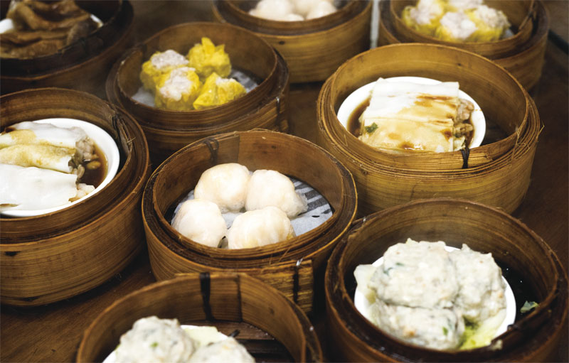
린흥 티 하우스의 먹음직스러운 딤섬들
●기본 50년, 세월이 기른 홍콩의 ‘오래된 맛’
맛의 천국이라는 수식에 걸맞게 홍콩은 맛있는 음식이 가득하다. 어느 나라에서 왔건, 홍콩에서만큼은 고향의 맛이 그립지 않을 정도. 그만큼 다양한 나라의 음식을 전문으로 하는 레스토랑과 펍이 차고 넘친다. 그럼에도, 홍콩 본연의 맛을 즐기려면 노포의 문을 여는 것이 정답이다. 올드타운센트럴 인근에는 세월이 기른 ‘오래된 맛’들이 존재한다. 기본 50년 이상, 많게는 100년 가까이 대를 이어 지킨 맛, 온종일 일정한 맛을 내기 위해 수도승처럼 일하는 요리사들의 깊은 맛, 대를 잇는 동안 시대에 맞게 변화해 온 맛, 나는 이것을 ‘참맛’ 이라 부르겠다.
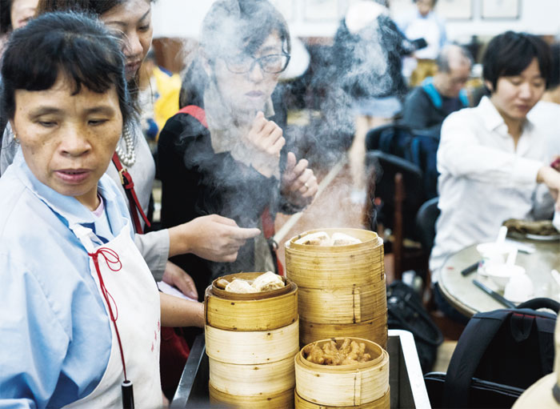
수레에 올려진 딤섬을 고르기 위해 사람들이 몰려든다, 린흥 티 하우스
애버딘 스트리트(Aberdeen St)와 웰링턴 스트리트(Wellington St)가 교차하는 지점에 위치한 린흥 티 하우스(Linheung Tea House)는 1926년 문을 연 얌차(Yumcha) 집이다. 홍콩 센트럴 인근의 얌차집 중 단연 최고다. 차를 마신다는 뜻의 중국어 음차(饮茶)가 광둥으로 오면서 얌차가 됐다. 과거 홍콩 사람들은 찻집에서 친구나 가족을 만나 차를 마시며 이야기를 나누다가 허기가 느껴지면 ‘마음에 점을 찍는다’는 의미의 딤섬을 곁들였단다. 이제는 딤섬이 메인이 되었지만 여전히 이름은 찻집이다. 여행자를 위한 배려는 일절 없다. 그럼에도 원형 테이블이 수십개 놓인 거대한 내부에는 여행자와 현지인들로 발 디딜 틈이 없다. 갓 쪄 낸 딤섬이 담긴 대바구니를 손수레에 켜켜이 쌓아 올려 테이블 사이를 오가면서 주문을 받는다. 수레가 가까이 오면 사람들은 어미 새를 기다리는 아기 새처럼 눈을 반짝이며 입맛을 다신다. 원하는 딤섬을 손에 넣지 못한 마음 급한 객들은 주방 앞에서 기다리는 진풍경이 펼쳐지기도 한다. 새우를 넣어 만든 하카우, 간 돼지고기와 버섯, 양파, 생강 등을 다져 만든 샤오마이, 구운 돼지고기 번인 챠슈바우 등 수십 종류의 딤섬은 물론 찐 오리발과 닭발을 내기도 한다.
주소: Tsang Chiu Ho Building, 160-164 Wellington St, Central, Hong Kong
주소: Tsang Chiu Ho Building, 160-164 Wellington St, Central, Hong Kong
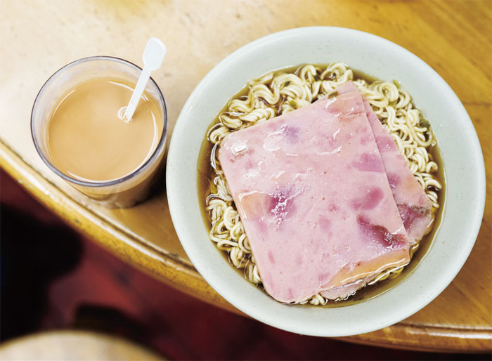
햄을 고명으로 올린 면과 따뜻한 밀크티로 아침을 해결. 랑퐁유엔
린드허스트 테라스 인근의 랑퐁유엔(Lan Fong Yuen)은 65년째 성업 중인 유서 깊은 차찬텡(Cha Chann Teng)이다. 차찬텡은 ‘차와 함께 음식을 내는 작은 점포’라는 뜻. 올드타운센트럴 인근 주민들과 여행자의 아침 식당으로 유명한 집이다. 밀크티와 곁들여 먹는 프렌치토스트, 돼지고기 번, 닭고기 누들 등이 인기 메뉴다. 식당은 비좁지만 서비스는 유쾌하고 친절하다. 향이 강한 음식이 많아 호불호가 있는 편이지만 부드럽고 진한 밀크티와 엄마가 만들어 준 것 같은 프렌치토스트는 모두가 좋아할 맛이다.
주소: 2 Gage St, Central, Hong Kong
주소: 2 Gage St, Central, Hong Kong
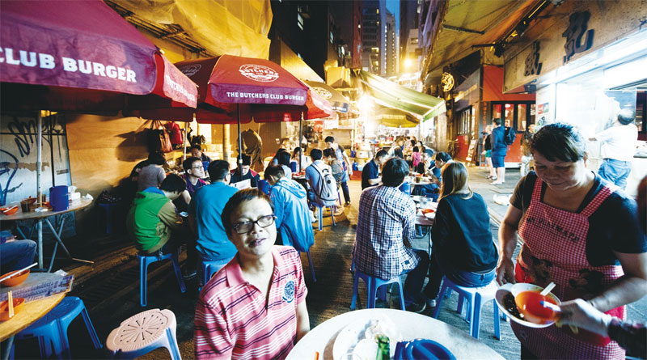
밤이 되면 골목은 활기를 찾는다. 다이파이동 싱키
다이파이동(Dai Pai Dong)은 홍콩식 포장마차다. 한때 정부가 은퇴한 공무원들에게 노점을 열 수 있는 허가증을 발급하면서 늘었었다. 현재 다이파이동은 사라져 가는 추세다. 허가증은 세습이 가능한데 자녀가 가업을 물려받지 않을 경우 정부로 반환토록 한 게 첫째 이유, 휘발유를 사용하는 터에 화재 위험이 큰 데다 위생상의 문제가 발생하면서 규제가 심해진 것이 두 번째 이유다. 정부에서 가스도 설치해 주고 위생문제도 많이 개선되었지만 홍콩 전역에 남아 있는 다이파이동은 스무 곳 남짓이란다. 수십년, 끈기 있게 장사한 다이파이동은 문전성시다. 스탠리 스트리트(Stanley St)에 위치한 싱키(盛記, Sing Kee)는 고우 스트리트(Gough St)의 신흥유엔(Sing Heung Yuen)과 더불어 대표적인 다이파이동이다. 다양한 종류의 볶음 요리를 내는데, 대부분의 음식에 감도는 불 맛이 압권이다.
주소: 1-7 Lyndhurst Terrace, Central, Hong Kong
주소: 1-7 Lyndhurst Terrace, Central, Hong Kong
홈페이지: singkeedining.com
전화: +852 2970 0988
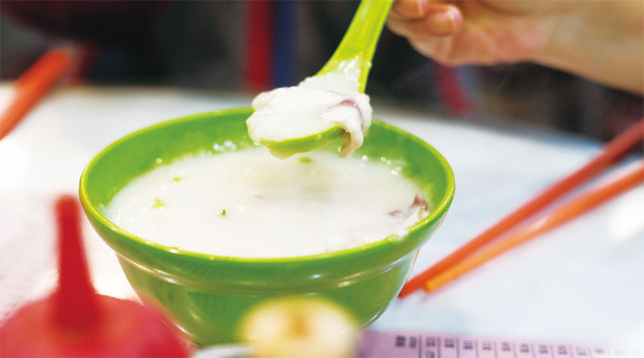
버섯 향이 진하게 나는 고소한 콘지. 와이키 콘지
싱키 바로 옆, 따뜻한 콘지를 전문으로 파는 맛집이 있다. 와이키 콘지(Wai Kee Congee Shop) 역시 65년 전 문을 연 노포다. 다이파이동을 운영하다 돈을 벌어 어엿한 가게를 냈단다. 쌀로만 끓인 콘지는 고소하고 쇠고기, 돼지고기, 새우 등이 고명으로 올라간 콘지는 감칠맛이 돌아 계속 먹게 된다. 콘지와 더불어 청펀도 맛있다. 청펀은 새우, 쇠고기, 간 한 돼지고기 등을 쌀가루로 만든 얇은 피에 싸서 쪄 내는 딤섬의 한 종류다. 지난밤 싱키에서 마신 맥주 몇 병이 순식간에 분해되는 느낌이다.
주소: G/F, 8 Stanley St, Central, Hong Kong
주소: G/F, 8 Stanley St, Central, Hong Kong
홈페이지: singapore-getaways.com
전화: +852 2551 5564
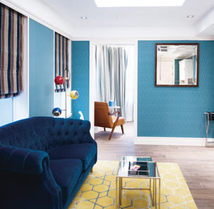
HOTEL
한 층에 객실은 단 두 개
마데라 할리우드(Madera Hollywood)
겉보기엔 작아 보이지만 일단 들어서면 엄지 두 개를 동시에 추켜세울 만큼 편안하고 쾌적하다. 한 층에 객실은 단 두 개씩. 땅값 비싼 홍콩에서 너무 호기 부린 게 아닌가 싶을 정도로 객실이 넓다. 부엌, 화장실, 침실, 거실이 분리되어 있고 세탁기부터 전자레인지, 네스프레소 머신, 심지어 아이폰 케이블과 보조 배터리까지 필요한 모든 것이 적재적소에 구비되어 있다. 특장점은 할리우드 로드 중앙에 자리 잡았다는 것. 금요일 밤은 호텔 바로 앞 골목이 가장 힙하고 핫하다.
주소: Madera Hollywood, 53 Hollywood Rd, Central, Hong Kong
홈페이지: maderagroup.com
한 층에 객실은 단 두 개
마데라 할리우드(Madera Hollywood)
겉보기엔 작아 보이지만 일단 들어서면 엄지 두 개를 동시에 추켜세울 만큼 편안하고 쾌적하다. 한 층에 객실은 단 두 개씩. 땅값 비싼 홍콩에서 너무 호기 부린 게 아닌가 싶을 정도로 객실이 넓다. 부엌, 화장실, 침실, 거실이 분리되어 있고 세탁기부터 전자레인지, 네스프레소 머신, 심지어 아이폰 케이블과 보조 배터리까지 필요한 모든 것이 적재적소에 구비되어 있다. 특장점은 할리우드 로드 중앙에 자리 잡았다는 것. 금요일 밤은 호텔 바로 앞 골목이 가장 힙하고 핫하다.
주소: Madera Hollywood, 53 Hollywood Rd, Central, Hong Kong
홈페이지: maderagroup.com
전화: +852 3913 2888
▶Place
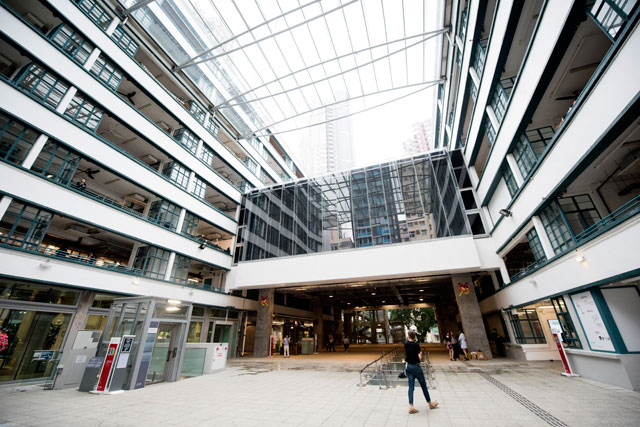
PMQ
태생은 1889년 홍콩 최초의 서구식 학교였다. 이후 1951년부터 2000년 까지는 기혼 경찰들의 숙소로 사용하다가 2009년부터는 신진 디자이너와 아티스트들에게 저렴한 비용으로 임대하기 시작했다. ‘ㄷ’자 구조의 4층 건물에 레스토랑, 카페, 디자인 스튜디오, 편집숍, 작업실 등 110여 개의 업체들이 입점해 구경하는 재미가 쏠쏠하다. 지갑 단속 단단히 하자. 예쁜 물건이 너무나 많다. 마데라 할리우드 호텔에서 도보 1분 거리에 있다.
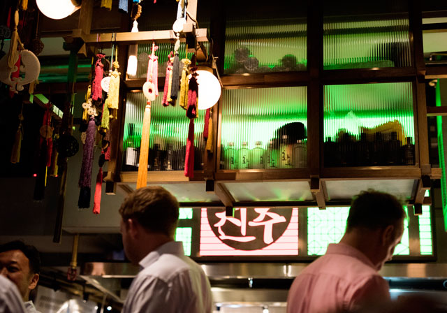
진주(JINJUU)
란콰이퐁 거리, 전망 좋기로 유명한 캘리포니아 타워 1층에 문을 연 모던 한식 레스토랑이다. 재미교포가 운영하는 곳으로 잡채, 비빔밥, 김치볶음밥, 만두 등의 캐주얼한 메뉴가 주를 이루지만, 실내장식과 서비스는 파인 다이닝 수준이다. 새우가루를 넣어 튀긴 스낵에 육회를 얹어 먹는 메뉴가 시그니처다. 오픈 키친 주변으로 거대한 노리개들이 매달려 있는 실내 장식이 인상적이다.
란콰이퐁 거리, 전망 좋기로 유명한 캘리포니아 타워 1층에 문을 연 모던 한식 레스토랑이다. 재미교포가 운영하는 곳으로 잡채, 비빔밥, 김치볶음밥, 만두 등의 캐주얼한 메뉴가 주를 이루지만, 실내장식과 서비스는 파인 다이닝 수준이다. 새우가루를 넣어 튀긴 스낵에 육회를 얹어 먹는 메뉴가 시그니처다. 오픈 키친 주변으로 거대한 노리개들이 매달려 있는 실내 장식이 인상적이다.
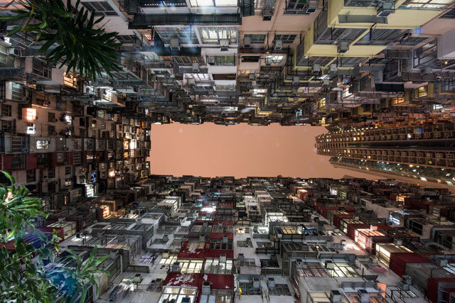
익청빌딩
올드타운센트럴에서 멀리 떨어져 있지만, 홍콩의 옛 모습을 고스란히 간직해 랜드마크가 된 곳이다. MRT 타이쿠(Tai Koo)역 인근 노스포인트(North Point)에 위치한 익청빌딩은 택시로 10분 거리, MRT로 이동하면 30분 거리지만 가 볼 만한 가치가 충분하다. 영화 <트랜스포머>의 배경이 되면서 유명해졌다. ‘ㄷ’자로 이어진 오래된 아파트와 인근 고급 아파트가 완벽한 ‘ㅁ’ 구조를 만들며 하늘을 가린다. 아파트 베란다의 기하학적 패턴이 은근히 아름다워 수많은 포토그래퍼들이 애정하는 피사체가 됐다.
올드타운센트럴에서 멀리 떨어져 있지만, 홍콩의 옛 모습을 고스란히 간직해 랜드마크가 된 곳이다. MRT 타이쿠(Tai Koo)역 인근 노스포인트(North Point)에 위치한 익청빌딩은 택시로 10분 거리, MRT로 이동하면 30분 거리지만 가 볼 만한 가치가 충분하다. 영화 <트랜스포머>의 배경이 되면서 유명해졌다. ‘ㄷ’자로 이어진 오래된 아파트와 인근 고급 아파트가 완벽한 ‘ㅁ’ 구조를 만들며 하늘을 가린다. 아파트 베란다의 기하학적 패턴이 은근히 아름다워 수많은 포토그래퍼들이 애정하는 피사체가 됐다.
글·사진 문유선 에디터 김기남 기자